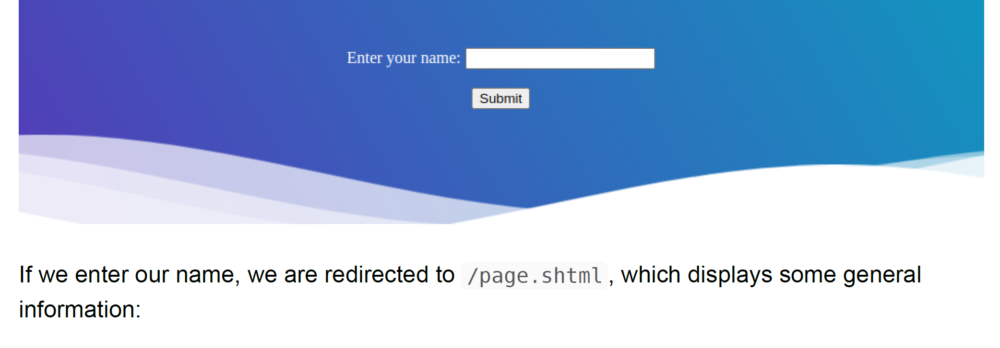

30-SSI
Intro
- Server-Side Includes is used to generate dynamic web content
- typical file exts indicating SSI is .shtm .shtml .stm
- some web servers can be configured to accept SSI with arbitrary exts
- SSI directive
- format : <!--#name param1="value1" param2="value" -->
- printenv directive
- <!--#printenv -->
- # prints env variables
- config: chaneg config e.G CHange error message
- <!--#config errmsg="Error!" -->
- exec
- <!--#exec cmd="whoami" -->
- include
- <!--#include virtual="index.html" -->
Exploit SSI
